Other hybrid methods#
RISING for sparse-view or limited angle tomography
(in the paper: Evangelista, Davide, Elena Morotti, and Elena Loli Piccolomini. “RISING: A new framework for model-based few-view CT image reconstruction with deep learning.” Computerized Medical Imaging and Graphics 103 (2023): 102156.)
In sparse-view (or limited angle) CT a coarse but fast reconstruction obtained by means of Filtered Back-Projection followed by a neural network, typically a UNet, trained on the ground truth images to remove noise and artifacts.
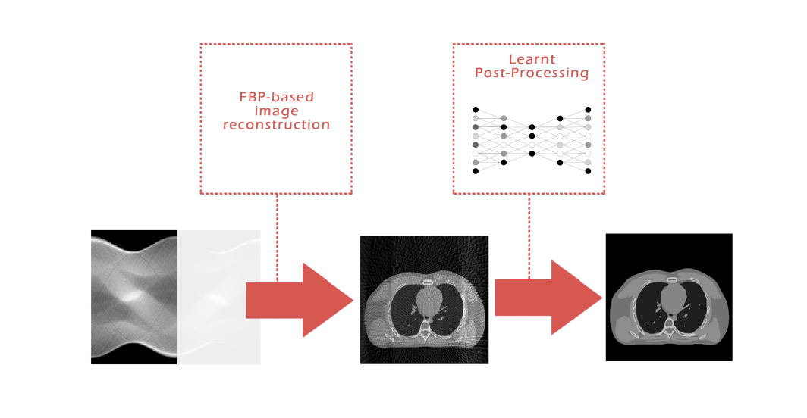

Since it is quite difficult to have ground truth datasets in CT (and in medical imaging in general), we can create our own target dataset by reconstructiong the sinogram with many iterations of an MBIR method with suitable parameters. This leads to the so called “RISING” framework:
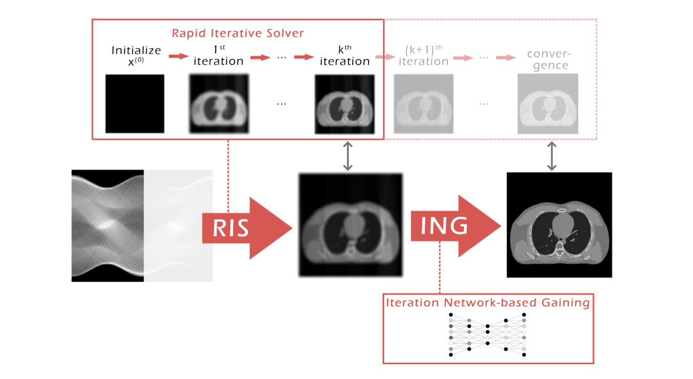

The difference with the previous paradigm called LPP is the target data used in the newtork training: given groaund truth images in the first case, reconstructed images by means of an MBIR method in the second case.
Deep Guess acceleration for explainable image reconstruction in sparse-view CT (Elena Loli Piccolomini, Davide Evangelista, and Elena Morotti. “Deep Guess acceleration for explainable image reconstruction in sparse-view CT.” arXiv preprint arXiv:2412.01703 (2024).)
Non-convex regularization methods, such as TpV, are very effective to remove noise and artifacts, but preserving edges and structures. Their drawback is the fact that, since they are non-convex, they can have more local minima and the general optmization algorithms that we use for solving the minimization problem converge to a single local minimum. We don’t have any guarantee that the convergence point is near the global minimum.
If we have a good approximation of the solution, we can use it as the initial guess of the optimization algorithm for solving the minimization problem. This dramatically increases the probability of converging to the global minimum or at least to a local minimum near the global one.
The idea is to use a convolutional neural network, ResUNet, trained on ground truth images (or good reconstructions as in RISING) to estimate the initial guess.
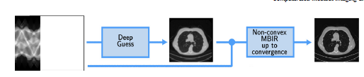

It is a framework based on two steps:
Compute an approximation of the solution by means of a neural network ( possibly a simple neural network, not so heavy). The output of this step is referred to as Deep Guess (DG).
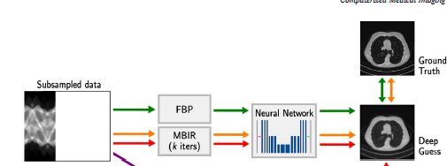

Summarizing how can the Deep Guess be implemented:
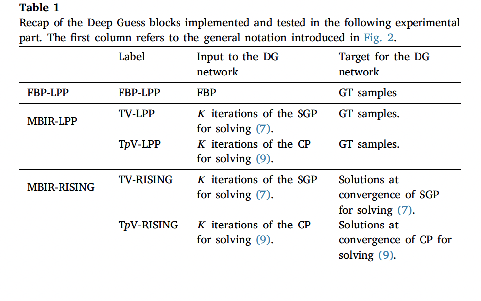

The second step refines the quality of image computed by the DG by applying to it some iterations of an iterative optimization algorithm solving the non-convex minimization problem:
We can use the Chambolle-Pock algorithm for this last step.
This gives explainability to the result obtained as the convergence point (or near it) of an optimizatiomn algorithm.
Some results on Mayo dataset:
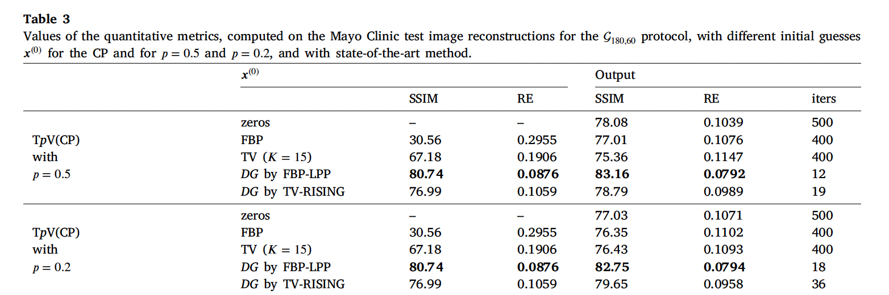

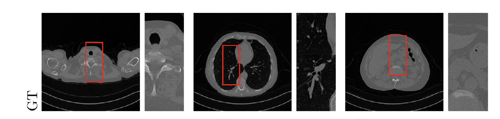

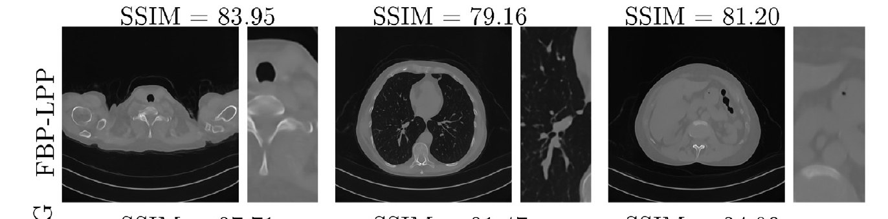


Some results on Coule dataset (with ellipsis):
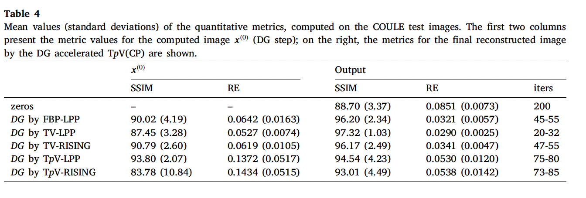

Spatially adaptive regularization: weighted TV
(from the paper: Morotti, Elena, et al. “Adaptive Weighted Total Variation Boosted by Learning Techniques in Few-View Tomographic Imaging.” Journal of Scientific Computing 106.3 (2026): 74.)
MBIR approach with Space variant regularization parameter, i.e. weighted Total Variation:
where
and \(w=(w_1, w_2, \ldots w_N)\) are the weights.
To properly choose the weights, basing on other proposals, we set:
where \(\tilde x\) must be a good approximation of the graound truth \(x_{GT}\).
Thw weights allows the adaptation of the regularizatio effort to the characteristics of the specific image. When \((|D \tilde x|)_i=0\) (i.e. when \((\tilde x)_i\) lies in a flat region) then \((w(\tilde x))_i=1\), resulting in a local component of the Tv precisely weightedby \(\lambda\).
Conversely, when \((|D \tilde x|)_i>>0\) (indicating that pixel i is located at an edge or corresponds to a fine detail) then \((w(\tilde x))_i<<1\).
This implies that the local contribute in the TV regularization is reduced, thereby allowing the preservation of fine details.
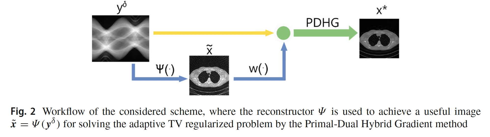

The reconstructor \(\Psi\) computes the image \(\tilde x\).In principle is any rconstruction method but we can plug in a neural network, that certainly computes an approximation \(\tilde x\) of \(x_{GT}\) with great accuracy.
For example, in a Computed Tomography task we can compute \(\tilde x\) with the usual framnework:
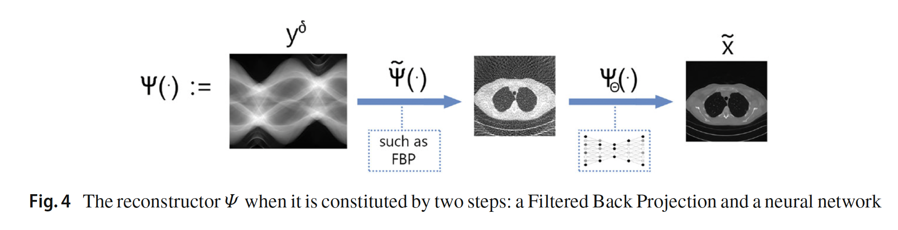

We can use a Residual Unet as neural network, or a Trasnformer.
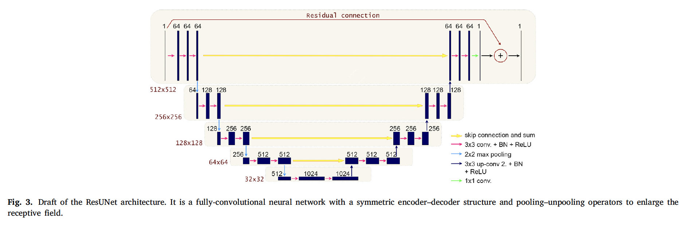

Some results
The ground truth image of the ellipsis data set:
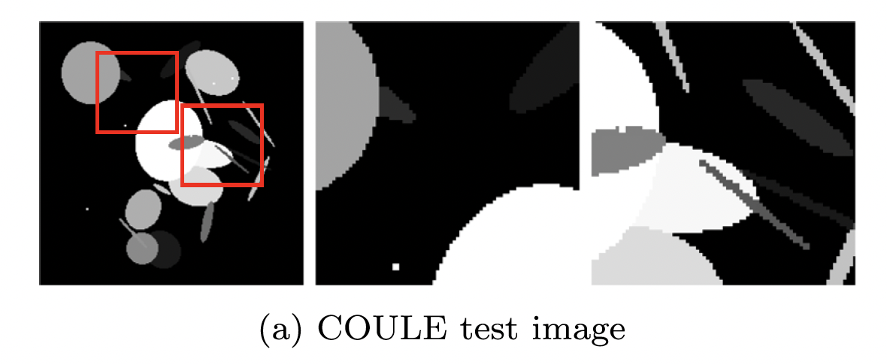

Some reconstruction results obtained with different reconstructors \(\Psi\).
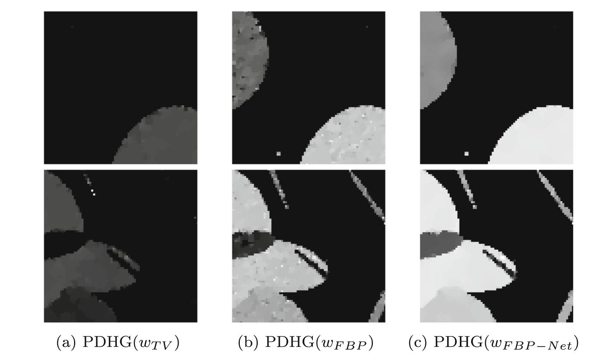

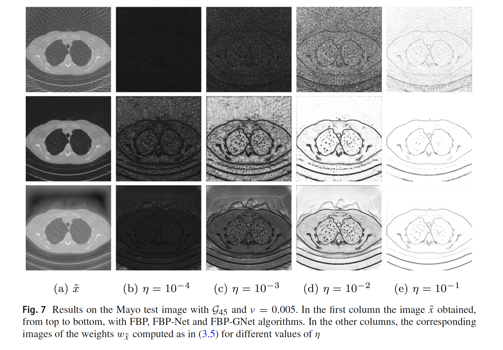

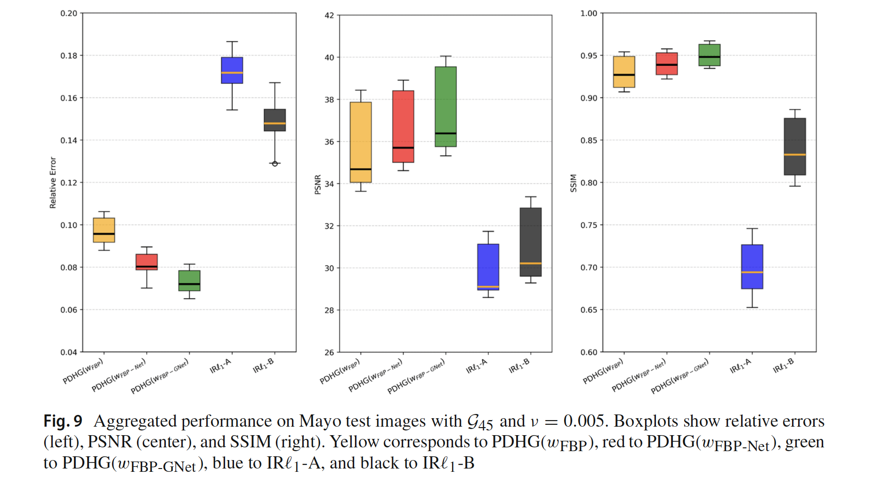

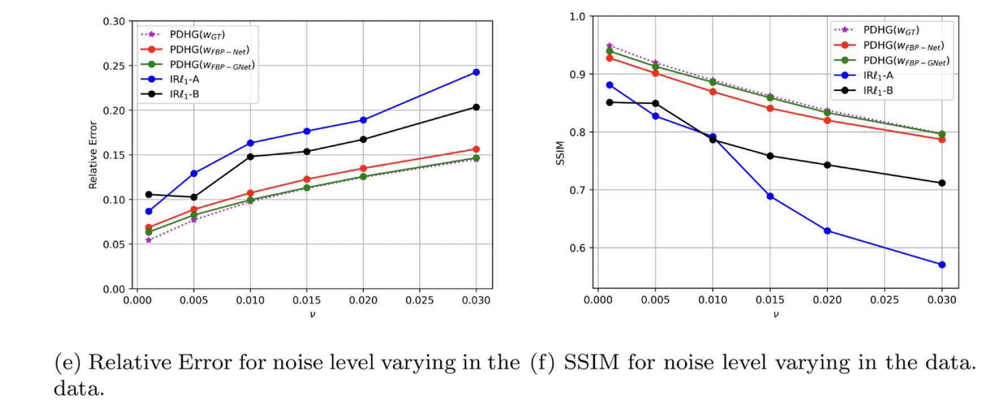